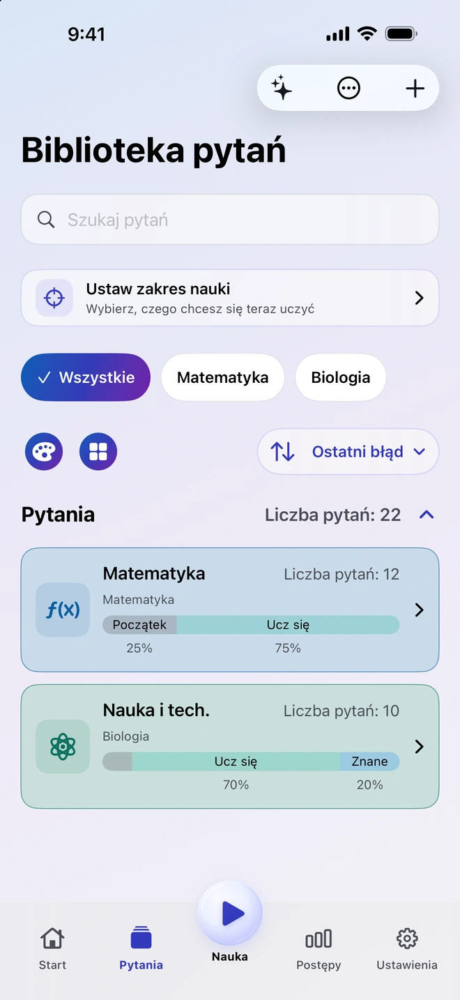
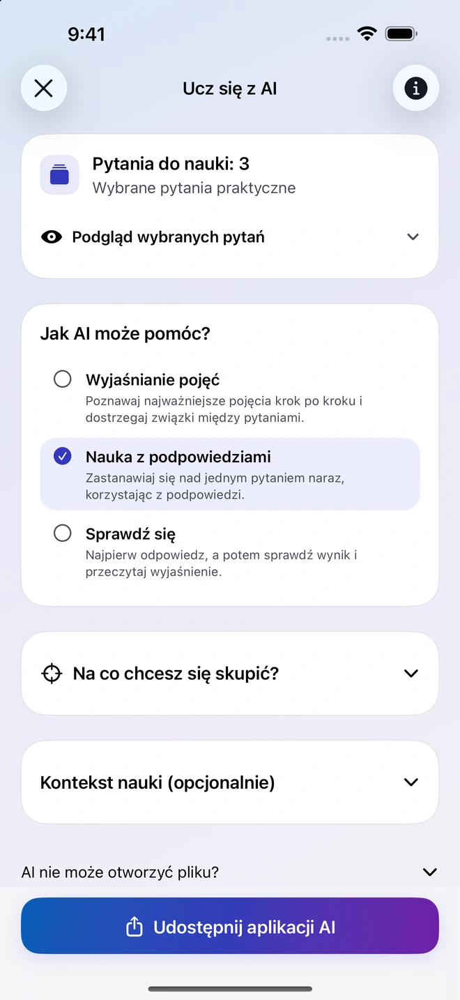
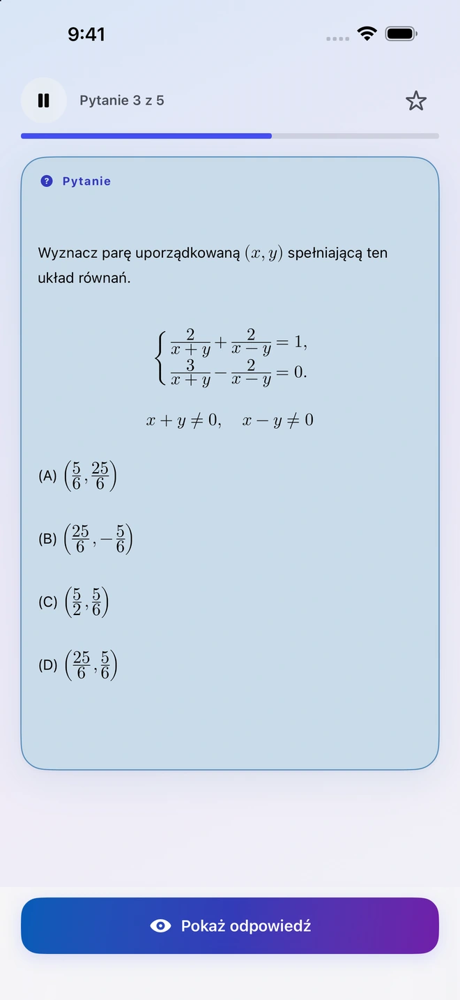
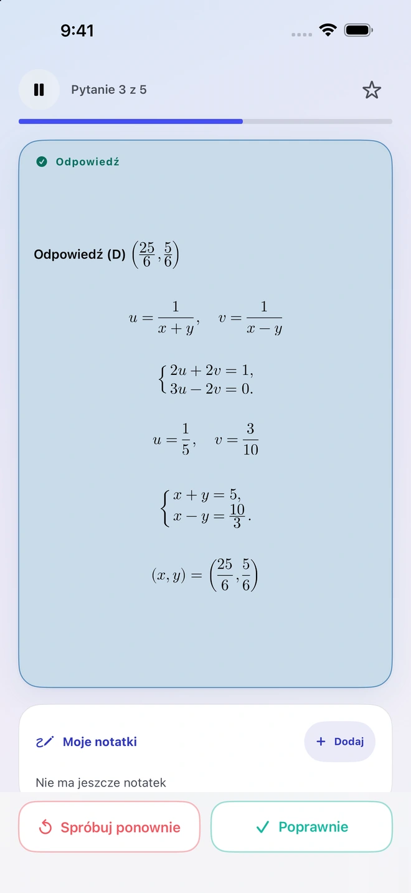
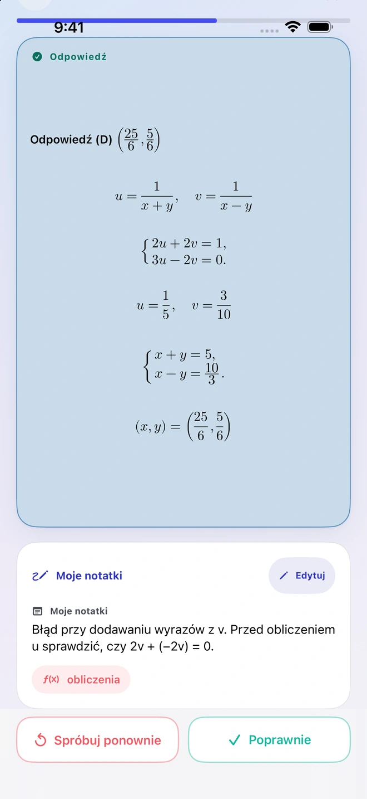
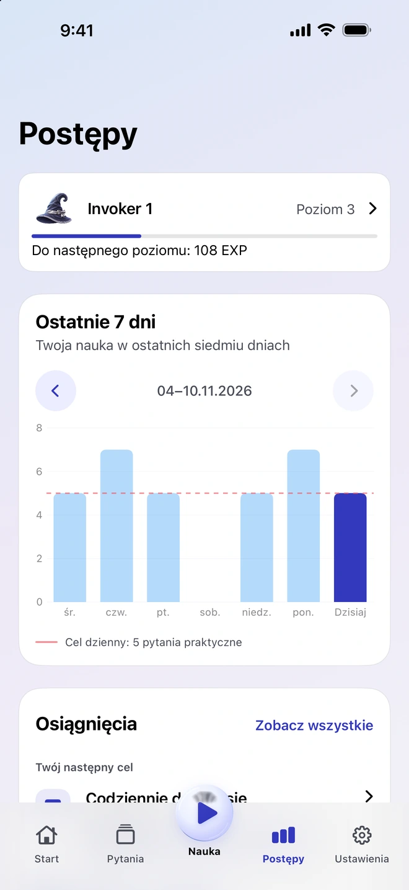

Zamień materiały w pytania
Dodaj zdjęcie, PDF, dokument lub notatkę. Quiz Invoker przygotuje materiały i instrukcje dla wybranej zgodnej zewnętrznej aplikacji AI. Sprawdź i zaimportuj wyniki, zanim dodasz je do biblioteki.
Aplikacja do nauki na iPhone’a
Zacznij od strony podręcznika, notatki lub pytania, które sprawiło Ci trudność. Dodaj materiał do Quiz Invoker, sprawdź pytania warte zachowania i wróć do nich podczas kolejnej sesji.
Zobacz, jak to działa
Zachowaj pytania, które są dla Ciebie ważne, i wracaj do nich w kolejnych sesjach.
Dodaj zdjęcie, PDF, dokument lub notatkę. Quiz Invoker przygotuje materiały i instrukcje dla wybranej zgodnej zewnętrznej aplikacji AI. Sprawdź i zaimportuj wyniki, zanim dodasz je do biblioteki.
Udostępnij wybrane pytania zewnętrznej aplikacji AI, którą wybierzesz. Poproś o wyjaśnienie pojęcia, wskazówki krok po kroku lub sprawdzenie wiedzy. Ty decydujesz, które pliki lub notatki udostępnić.

Najpierw odpowiedz samodzielnie. Potem odsłoń rozwiązanie i oceń, ile udało Ci się przypomnieć. Zapisz, na którym etapie pojawiła się trudność, by wrócić do tego przy następnej powtórce.


Widok siedmiodniowy pokazuje ostatnie ćwiczenia i dzienny cel. Notatki pozostają przy pytaniu, więc później możesz wrócić do odpowiedzi i własnego toku rozumowania.


Porządkuj pytania i ćwicz offline bez konta Quiz Invoker. Aplikacja przygotowuje pliki i instrukcje na urządzeniu. Zgodna zewnętrzna aplikacja AI przetwarza materiały, które zdecydujesz się jej wysłać.